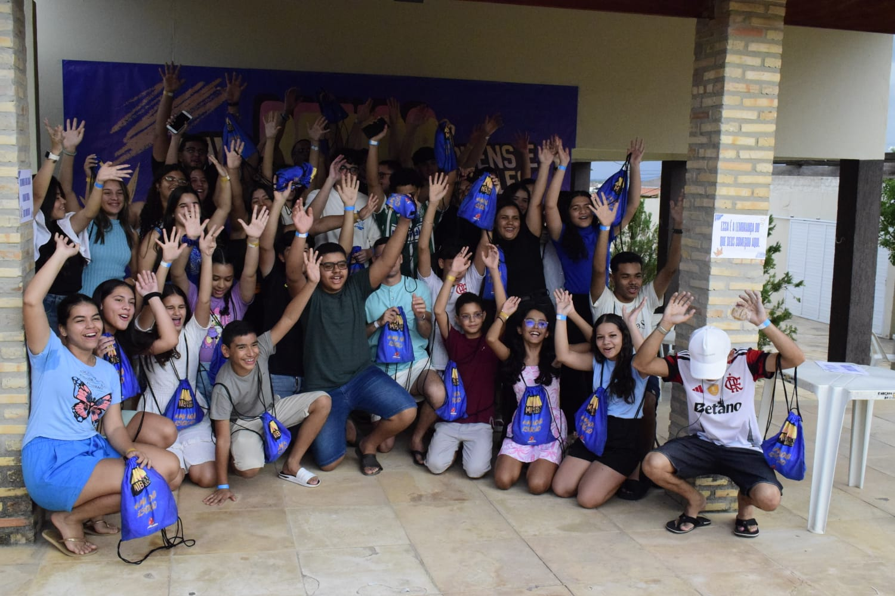
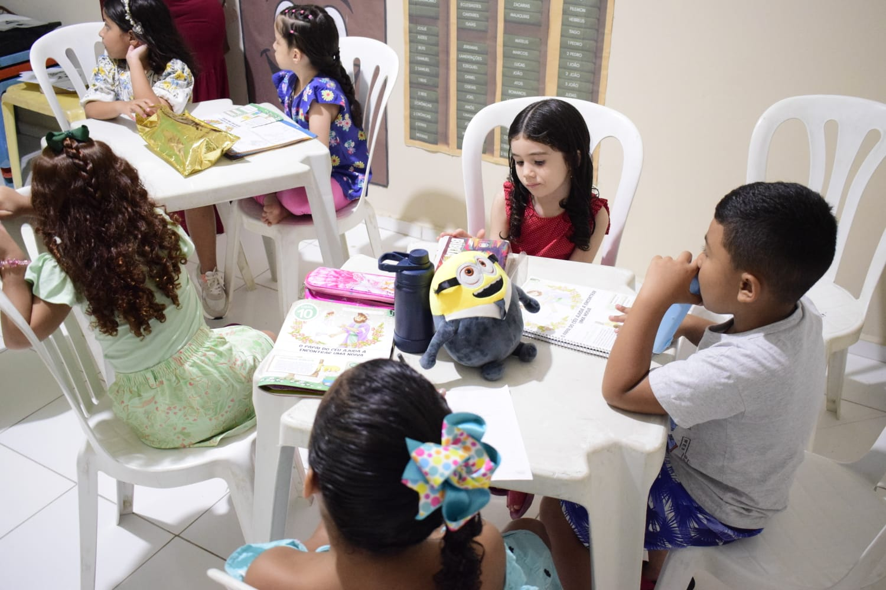
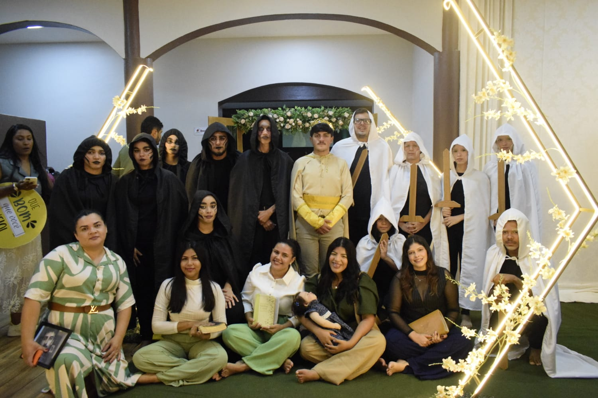

NOSSOS MINISTÉRIOS
Há um lugar para você servir e crescer.
Somos uma igreja formada por pessoas com diferentes dons, talentos e chamados. Conheça alguns dos ministérios que fazem parte da nossa comunidade.

MIB-Jovem
Missão Betesda Jovem, um espaço para a juventude crescer na fé, construir relacionamentos e servir a Deus.
Conhecer ministério.JPG)
MIB-Adoles
Um ministério dedicado aos adolescentes, proporcionando comunhão, discipulado e crescimento em Cristo.
Conhecer ministério
Betesda Kids
Um ministério dedicado às crianças, ensinando a Palavra de Deus de forma acolhedora, criativa e especial.
Conhecer ministério.JPG)
Mulheres Cheias de Graça
Um espaço de comunhão, fortalecimento e crescimento para as mulheres da nossa igreja.
Conhecer ministério.JPG)
Ramos da Videira
Ministério de louvor que conduz a igreja em momentos de adoração e celebração.
Conhecer ministério
Adorarte
Ministério de teatro que utiliza a arte para comunicar mensagens, expressar a fé e alcançar vidas.
Conhecer ministério